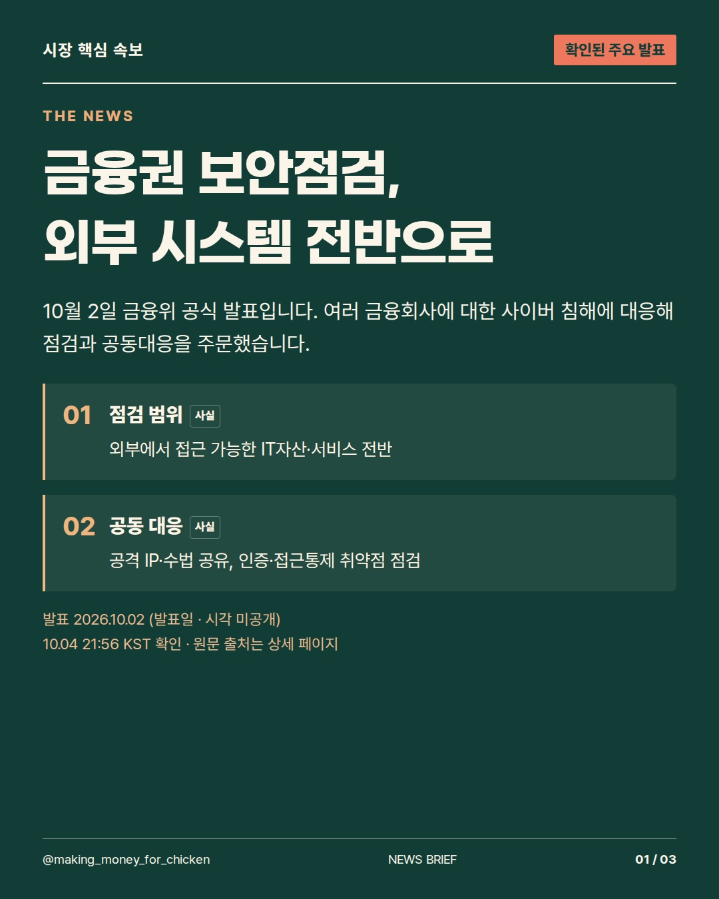
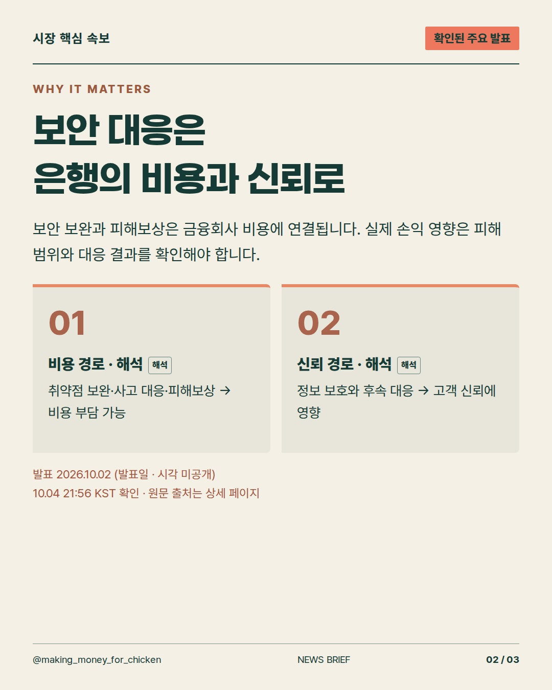
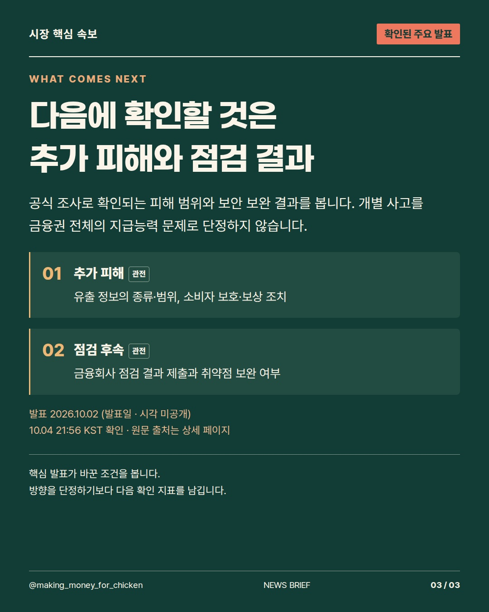

2026-10-04T12:56:29+00:00 확인 기준 · 발표 사실과 시장에 대한 해석을 구분합니다.
금융권 보안점검이 외부 접근 시스템 전반으로 넓어지면, 은행 경영에는 무엇이 달라질까요? 10월 2일 금융위 발표를 바탕으로 확인된 조치와 비용·신뢰의 연결, 다음 점검 항목을 3장에 담았습니다. #금융보안 #은행업 #시장뉴스



사실·해석·관전 포인트를 구분한 정보 콘텐츠. 투자 참고용 · 매수·매도 권유 아님.